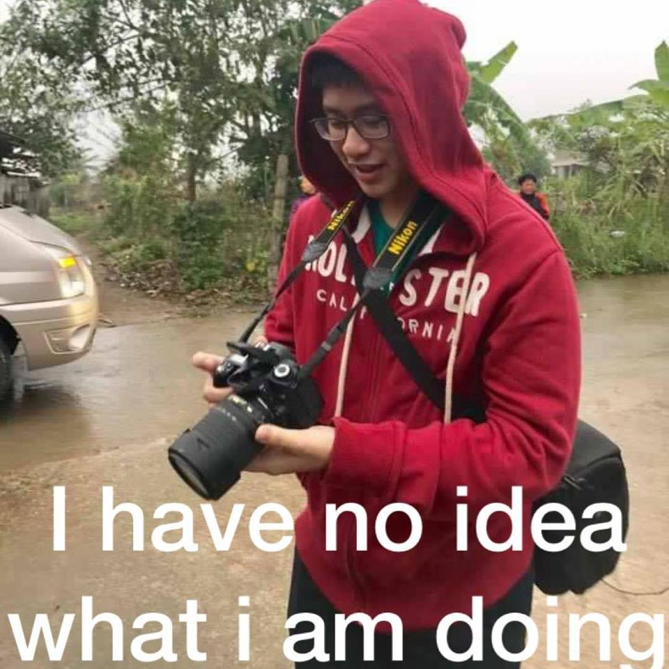
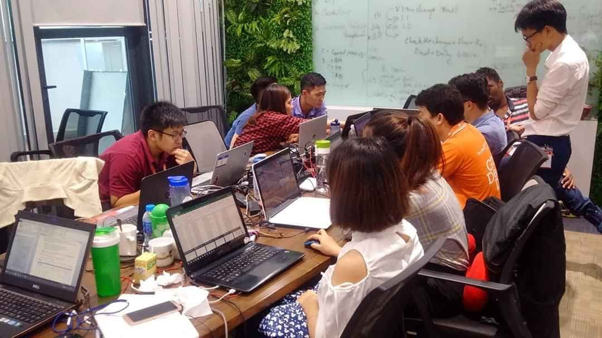

A Whole Section About Me?

Salutations visitor to my website! My name is Nguyen Tuong Lam. I am State University of New York at
Plattsburgh
Computer Science graduate student with a minor in Web Design.
At 22 years of age, I can't say that I am better than anyone. Hell,
I don't think I am better than some of my peers. Despite the glaring problem of me being too humble to the
point
of underselling myself, I am a kind and caring person. I maybe quiet when
you first talk to me but as time goes by, I will become friendlier and more energetic
person.
If you wish to know more about me, I have listed my Facebook, Twitter and LinkedIn
down below. I will also link my work email right.... here


And About My Skill Sets?

As for my abilities and skillsets, I do have some to offer.
Being a Computer Science major, at the very least, I know the basic to these programming languages: C++,
HTML, CSS, JavaScript and Python. And with me having a minor in Web Design, that also means I have a basic
understanding of Photoshop.
I have also taken a course in learning how to use the game engine Unity. As of this point, my creation in
Unity
is... weird but also interesting to look at. In my opinion, it is a very solid option for
anyone trying to learn about the world of game developement, which was the primary reason I took the course
in the
first place. If you have any other questions, you are free to contact me through the means I provided on the
previous tab or you can view my resume right... here .